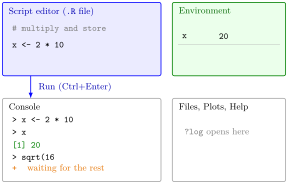

R and RStudio¶
Definition¶
R is a programming language for working with data, doing calculations and making graphics. RStudio is an integrated development environment (IDE) for R: one window that combines a console, a text editor for scripts, an overview of stored objects, a graphics window, a file manager and the help pages.
The console evaluates one command at a time. R shows the prompt >, you type a command on this command line and press Enter; R executes it, prints the result and shows a fresh prompt.
An R script is a plain text file (extension .R) that holds R code. Code written in a script can be saved, run line by line or as a whole, and run again later, so the whole calculation can be reproduced. Everything to the right of # on a line is a comment: R ignores it.
Interpretation¶
The console is a conversation with R: you ask one thing and get one answer, and the question is gone once you have asked it. A script is a recipe: the full list of commands, kept in a file, that you or someone else can run again and get the same results.

The figure shows where things happen. You write x <- 2 * 10 in the script editor (blue); pressing Run, or Ctrl+Enter, sends the line to the console, where it appears after the prompt >. The stored object x with value 20 then appears in the environment pane (green), and typing x in the console prints [1] 20. The line > sqrt(16 ends without its closing bracket, so R answers with the continuation prompt + (orange) and waits for the rest of the command.
Three marks in the console are worth reading correctly. [1] is not part of the result: it is the position of the first value on that output line, which matters when a result fills several lines. + means the command is incomplete; finish it or press Escape. An error message means R could not carry out the command; correct it and try again at the next prompt.
Writing code in a script is the R version of writing out an algorithm: a fixed sequence of steps that anyone can repeat. A common mistake is to work only in the console and lose the steps behind a result; another is to keep typing new commands after a + prompt, which R reads as part of the unfinished command.
Key Results¶
- A number in square brackets at the start of an output line, such as
[1]or[26], is the position of the first value on that line. Where the line breaks depends on the width of the console. - The prompt
>means R is ready; the prompt+means R is waiting for the rest of an incomplete command (often a missing closing bracket). Escape cancels the command. - In RStudio, Run or Ctrl+Enter (Cmd+Return on a Mac) runs the line containing the cursor or the highlighted code; Source runs the whole script.
#starts a comment: the rest of that line is not evaluated, both on a line of its own and after code on the same line.- An error message stops that command only; R stays ready for the next command.
Examples¶
1. R as a pocket calculator. Each command is typed at the prompt and evaluated on Enter.
2 * 10
#> [1] 20
10 + 5 - 4
#> [1] 11
10/2
#> [1] 5
sqrt(4) # square root
#> [1] 2
log(10) # natural logarithm
#> [1] 2.302585
2^2 # power
#> [1] 4
sqrt() and log() are built-in functions; see Function Call.
2. Reading the bracketed numbers. 1:30 produces the 30 whole numbers from 1 to 30 (see Sequences with : and seq()). In a console 80 characters wide the output needs two lines:
1:30
#> [1] 1 2 3 4 5 6 7 8 9 10 11 12 13 14 15 16 17 18 19 20 21 22 23 24 25
#> [26] 26 27 28 29 30
The second line starts with the 26th value, so it is labelled [26]. In a wider console the break moves, and the label changes with it.
3. An unfinished command and an error. Here the console is shown as it looks on screen, prompts included.
The first command lacked its closing bracket, so R showed + and waited; typing ) completed it. The second command misspells the function name, so R cannot find it and reports an error instead of a result. Nothing else is affected: the next command runs normally.
4. Comments in a script.
The comment explains the line for a human reader; R evaluates only 2 + 2. A script made of such commented lines can be saved (File, Save As) and run again from the top with Source.
Prerequisites¶
- None: this is the starting point of the course.
Related Concepts¶
Sources¶
- Programming for EOR · Week 1
- Lecture script Intro to R and RStudio (Part 1), sections "Using R & RStudio", "R as a Pocket Calculator" and "Creating R scripts"
Aliases: R, RStudio, R console, R script, console, command line, prompt, IDE Keywords: console and script, command prompt, comments with, Run and Source, reproducible code
Last updated: 10 November 2026 16:43
R and RStudioFunction CallObject and AssignmentPackagesReading and Writing CSV FilesAtomic Vector